博士がダメ人間に・・・・・・・
パワパフも新刊もやっと入手できたけど、ちょっと今手一杯だな。もうちょいお待ちを。
(日記とか言うモノ)
ディズニーチャンネルでやっているティーモ・シュプリーモを見る。
日本のディズニーチャンネルでは無視されまくってるので、本国サイトのTeamo Supremo。
スタッフとか全然違うんだけど、まるでカートゥーンカートゥーンズ。背景の描き方までそっくりだ。つうかモロ意識してる。てなわけで、チャンネル間違えたんじゃないかと思いつつもカートゥーンカートゥーンみたいな感じを期待して見る。ディズニーチャンネルはいつも黒ネズミ様とそのご一行ばかりを贔屓して、こういう番組とか全然力いれないんだよね。でも、その中にキム・ポッシブルや学園パトロールフィルモアのような秀作があったりするので、油断できないんだ。（キムも最初は全然力いれてなかったものなあ）
・・・・・・・これはっ！！！！
つまんねええええーーーーー。
まいった。こんなにツマランとは予想してなかった。
まさに、ハンナバーベラから、かわいさと黒さをそぎ落とした見事なまでの「油ぬき」とはこの作品をさすべきだよ。キムポはあんなにおもしろいのに、なんなんだこれは。デクスター第3シーズンがめちゃめちゃ面白く見えてきた。なのに、主人公の吹き替えが「朴路美」。ムダに豪華。
それに比べて、ニックのThe Fairly OddParents、ヤバイくらいにおもしろすぎる。オーイェイカートゥーンズから独立してシリーズ化してから、めちゃめちゃ暴走してるようだ。ギャグもパロディも満載で、まるでデクスターの初期シーズンのようだ。MLaaTRがニックのパワパフならこっちはニックのデクスターってとこか。
シリーズ化してからTimmyの声はタラ・ストロングになったみたいだし。やっぱシリーズ版が見たいね。
日本ニックも損してるよ。もっとこの手の新世代ニックトゥーンをガンガンやるべきなんだよ。ジェニーもいいけど、これもやってくんないかなあ、早いウチに。
きゃーーーーーっ！ きゃーーーーーっ！
JINX、魔法少女みたい。 サイボーグうらやましいぞ。
今日はなぜか3回も日記かいてる。
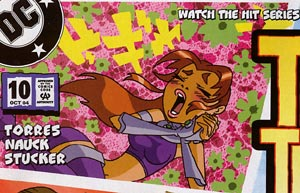
ドギャーーーーン
てなわけで、TTGo#10買いました。イケメン アクアラッドの登場でタイタンズの女子たちはメロメロのラブラブ。でも、なんか今回は変な話だったなあ・・・
なんちゅうか、正義のヒーロー話っていうより、ティーンエイジャーのドタバタ日常って感じがした。それにしても、Todd Nauckさんの描くビースボーイはカッコいいな。ていうか、
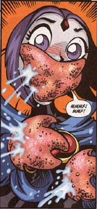
レイヴンが大変なことに～～～！！！
一方そのころパワーパフガールズでは・・・
博士がダメ人間に・・・・・・・
パワパフも新刊もやっと入手できたけど、ちょっと今手一杯だな。もうちょいお待ちを。
blogを調べていて、こんなのみつけた。
腐女子言端の内と外 の
絵を巡って・補足 絵師系BLOG村
前から「deviantART」ってどんな感じのものなのか説明つけにくかったけど、この説明が一番しっくりした。ただの画像置き場ではなく、絵を中心としたBlog。なるほど。自前のサイトをやめてこっちに移行してくる人が多いのも、日記やニュースサイトがどんどんBlogに移行していった過程とかぶってわかりやすい。
調べてみると、けっこう日本人もすでにたくさん登録しているようだ。
あと、見るとこがファンアートに偏っていたから、なかなか全体が把握できなかったけど、スキン置き場（発表場）としても有名だったようだ。人によっては、「deviantART？ああ、スキンがいっぱい転がってるよ」てなノリなのがおもしろかった。まるで、象を触った3人の盲人みたいだ。
CalArts
のひとびと
Craig McCracken, Genndy Tartakovsky, Rob Renzetti, Cindy Morrow などはもともと CalArts
で学んでいたときからの友人どうしである。 かれらの中心人物だったとおもわれるのが Miles Thompson
コレ読んで思ったこと。
まるでトキワ荘みたいだ！！
さしずめMiles Thompsonがテラさんか。Craigが藤子Fで、Genndyは藤子Aかなと思ったが、特撮やヒーローものにまで手をひろげているさまはむしろ石森を連想させる。
このうちの誰かでいいから「カートゥーン道」でも描かないかなあ。すごい面白そうなんだが。器用そうなCindyあたりが良さそうな気もするけど、Genndy自ら描くとなんかスゴイのが出来そう。
間違えて25日の日記を消してしまったので、もう一度書き直す。
ただ、あの時のテンションには上がりにくいので要約で。
あとキボンヌされたので、もう一回。
人間のトムとジェリーがいたってホント？ミスター念力ってなんのカートゥーンに出てたっけ？カートゥーンカートゥーンズってなにがあったかなあ？日本未公開のMy
Life as a Teenage Robotってどんなアニメ？
そんな貴方に過去から未来までぎっちりつまったカートゥーンガイドの決定版！
「TOONGUIDE.1」はLLパレスで通販中！
たのしいコラムや、カートゥーン年表もあるよ。
こんなものでどうでしょう(笑)
今日はTeenTitansのJINXの日のはずだが。どんなのかな～。はやくどっかにアップされないかなー。
やっぱりなにかと気になるblog。最近は日記サイトもブログに移行してきているようで、イロイロと気になります。記事がカテゴリー分け出来たり、最近はブログ内検索とかもついて、だらだらと積み重ねたものがアーカイブ化されていくのがなんか魅力。でもなぜかなかなかふんぎれないでいる。なぜだろうか。
あんがいカテゴリー分けできるってのが逆にひっかかっているのかもしれない。
自分のようにだらだらと、そしてひょいひょいと話題を変えるようなものは、そんなちょっとしたことが気になるのかもしれない。
ポータルサイトやプロバイダーが提供するタイプは楽そうだけど、やっぱ自前でやったほうがなにかと気持ちいい気もする。自前で用意するものといったら、MovableType がめっちゃ有名だけど、最近Blosxom なるものを知った。ややマイナーかもしれんが、もし自前でやるなら絶対こっちだと決めた。だって「ブロッサム」ですもの！
とか言ってBlosxom（ブロッサム）調べていたら、つかれた。単純そうだから、まともに理解してなくてもトライ＆エラーでやればなんとかなりそうな気もしたが、いくつかの専門用語のイメージがつかめずゲンナリ。まあ、このへんは慣れてくればそのうち頭にしみこんでゆくことだろうて。＜楽観主義者
めんどうくさいなあ。プロバイダーかなんかが提供してる無料ブログかなんかサクッと使うかな。＜ヘタレ
それより内容だ。
ブログは日記やらニュースやらにBBSみたいなコミュニケーションツールが複合化されたもの、って理解しているのだが、ブログの場合、管理人のコメントにレスが付く形になるので、他の人が任意に情報や話題を投稿してくれるBBSは捨てがたい。ていうか、なくせない。うーむ。
煩雑になりそうだが、別コンテンツとしてたててもいいかもしれない。テーマを絞って。今の表のPpGニュースと統合させればそんなでもないかな。
massangeanaさんみたいに、気にせずやればいいのかもしれない。
massangeanaさんの日記ページ。
前はこの中にカートゥーンの話題なんかも紛れていたけど、最近そのあたりをトゥーン日誌@サンタクルズとして独立させた、みたいに。
ニュースサイトから発展していった過程があるからblogの解説に「時系列に」といった記述がときおり見えるが、そんなの気にしないでカートゥーン感想とかアメコミ感想とかにすれば、カテゴリー別にアーカイブされていくという機能がうまく働きそうな気もする。だらだらとした日常は、そのまま日記としてこのまま続けてね。うむ、なんかいいような気がしてきた。が、そんなことを考えているだけで時間がすぎてゆくので、blogを始めるのはまだまだ先にことになりそうだ。
で、そのblogでこんな記事をみた。
DIC Entertainment
太平洋の釣り橋日記で知ったのだが、いつのまにかDICのサイトが綺麗になっていた。しっかしここは本当に「サタデーモーニング」（ここでも触れられてるように、どーしようもない子供だましなアニメ作品の蔑称の意味。まあそうともかぎらんのだが・・）な会社だなあと、作品リストとかみて改めて思う。
気になったのがSuperhuman
Samurai Syber-Squad。超秘密探偵クルクル（Super Secret Secret Squirrel）と同じセンスなのかSの多いこと多いこと。なんかムリヤリって気もするが。
なにかと思ったら・・・よく覚えてないけど「電光超人 グリットマン」？ どのへんがサムライなんだか。
あと、Trollz。
鼻の表現が独特っぽいが、いわゆるデフォルメポップ調の絵柄。さてはて、どんなものか気にはなる。力を入れていこうと思ってるのか、専門サイトも出来るみたいだ。セーラームーンというよりは、おじゃ魔女？
Speed
Racer Classic
まあ、マッハGoGoGoなわけだが、わざわざClassicって付いてるとこが笑える。深読みすれば、勝手に作った新作がどっかに存在してるって想像できるからだ。Clipで映像も見れるが、あの有名なオープニングの最後のカット、今見るとマトリックスだな。ウォシャウスキー兄弟もきっと好きだったに違いない。
海外の連中がこれに対する思いってのは、私らがチキチキマシーンを昔に見たといって懐かしがる感覚に近いのかもしれない。
てなわけで、ちょい前にコレのパロディがデクスターでやっていた。「栄光のモック５」
全編これパロディなんだけど、マッハGoGoGoのパロディではなく、Speed Racerのパロディってとこがポイント。なんか変なノリが多いんだよね。そのうちの一つが解決した。
キャラクターがみんな妙な解説口調で早口なんだ。特に英語で聞くともっとよく分かる。なぜか？
吹きかえと音節数
「外国語の番組を吹きかえる場合, くちびるの動きをあわせようとすると, 言語によって音節数がちがうのが大きな問題になる。」
で、音節数の少ない英語でムリヤリ合わせようとしたために、ああいう変な口調で放送されてたみたいだ。（モジョしゃべりはこれがルーツなのかしらん？）
そんなわけで、日本人にはよく知ってるアニメにもかかわらず、どのへんがパロディになってるのかが分かりずらいという不思議な現象がおこるわけですな。
日本人がファンタシックフォー をパロって「ムッシュムラムラー」とか言わせても、外人にはどうしてそれがパロディになってるかのか分からないみたいなものか。
うーむ、デクスターの第1、第2シーズンは研究しがいがあるなあ。
とまあ、こうしてだらだらと書いてゆくと、blogの場合どういうカテゴリーにしたらいいのか分からなくて悩みそうだ。カテゴリー[blog]それとも[カートゥーン]？やっぱり私はblog向きじゃないのかなあ。
だいたいblogにしては長すぎか(笑)
うっかり間違ってこの日の日記を消してしまった。あーあ。
とりあえずそのとき書いた内容は、恥ずかしい話2点。要約として書き直してみた。
１）制作に参加したカートゥーンガイド同人誌「TOONGUIDE.1」がLLパレスで委託通販されるようになった。通販ページを覗いてみたら、内容紹介が自分のページだったので恥ずかしかった。はずかしついでなので、そのページを大きなサイズで公開する＞■
ガイドとしてはまだまだ足りないものだらけなので、未掲載の好きな作品、詳しい作品がある人は次回投稿とかしてほしい、と思った。
2）FScのサイトにコミケの時の日本訪問記がアップされた。下のほう、gift art。プロとしても活躍している作家さんたちに混じって、おしゃべりの途中でテキトウに描いた私の絵も掲載されていた。（12番）他と比べあまりのショボさに、赤くなったり青くなったり。
パソコンがなんか不調。
「キャットウーマン」やら「エイリアンVSプレデター」やら「ヘルボーイ」やら、まだまだアメコミ原作の映画化がさかん。日本でも今度「逆境ナイン」やらも実写映画化するみたいで、世界中で漫画原作の実写化がはやってますなあ。
実写化といえば映画だけでなく舞台化もまた実写化といえますね。
てなわけで、今「HUNTER×HUNTER」も舞台でやってるみたいです。
ハンタの舞台化はこれが初めてってわけじゃないし、格別珍しくもないって言ってしまえばまあそうなんですが、パクノダ役がバタカの池田有希子さん！
いや、そんだけ。
アメコミの実写化はけっこうですが、メジャータイトル以外にもちょろちょろと欲しいところ。個人的に実写化してほしい作品は「Gunwitch: Outskirts of Doom」！
Dan Brereton (ダン・ブレレトン)原作、Ted Naifeh (テッド・ナイフュー)作画
「ノクターナルス」っていう超絶怪奇フリークスどもが戦いまくるバトルホラーシリーズの番外編みたいなもので、そこで人気（多分）のガンウィッチとハロウィンガールを主役としたミニシリーズ。この回はダン・ブレレトンはライターで、絵のほうはコートニーシリーズでおなじみの（って誰に対しておなじみなんだか・・）テッド・ナイフューなんだけどね。ダン・ブレレトンの、こってりペイントアートもいいけど、テッド・ナイフューのコントラストの強いシャープな絵はけっこう好み。
狼男組とヴァンパイア組がショバを争う街に、ガンウィッチとハロウィンガールがやってきて・・・って、早い話が「用心棒」。
でも、古代のヴァンパイアクイーンは蘇るは、復讐のためにヴァンパイアを狙うアサシンギャル（忍者ガール？）の「月夜」が参戦するはと、怪人どもが大暴れ。かー、映像化したやつ見たいねえ。ノクターナルスでもいいんだけど、こっちのほうが単純明解なので映画化はしやすいかと。サム・ライミはスパイダーマンなんか撮ってないで、こっちをやるべきだったんだよ。偉くなっちゃったんでもう無理かなあ。
最近ノクターナルスの新刊「Nocturnals: A Midnight Companion」が出たんだけどハードカバーだから高いんだ。だからまだ買ってない。うーむ、でも読みたくなってきた。
とにかくね、ガンウィッチはカッコいいんだ。そんでもってハロウィンガールはかわいいん（？）だ。ヘルボーイは実写じゃなくて、あの絵柄でアニメでやってほしかったと今でも思ってるけど、ガンウィッチは絶対実写が似合う。間違いないね。
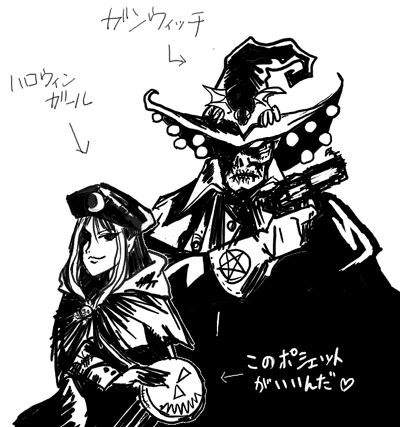
結局キム新作全部みちゃった。
「ロン イン ジャパン」を見た影響で、今日はディズニーチャンネルで「ベストキッド」を見てたりします。「ワックスかける、ワックスとる」
キム祭が終わったら、9月からはKND。そしてビリマン復活。10月にはMlaaTR。さらに11月のパワパフのDVD。TeenTitansは果たしていつか？そんなこんなで、まだまだカートゥーン周りはいろいろと楽しめますね。
TeenTitansと言えばアメリカではついに「Aftershock2」が放映された様子。テラちゃん細いねえ。あの微笑みがつらい・・・
コミケで「GIRLS in GOTHAM City」を出していたいかれしちやさんのサイトの「雑文録」にかなり気になる記述が。
＞【コスプレの方々】
ブロッサムのコスプレをした可愛らしいお嬢さん、ユートニウム博士な方、気の利いた言葉を掛けられずにゴメンナサイ…。
ユートニウム博士はまあいいとして（笑）、
ブロッサムのコスプレ！！！？？？？
えええええ！そんなの初耳！きいいい、ちきしょう、ワシに内緒でみんな楽しんでやがったのですな！むきいい。
これがブログだったらトラックバックやRSSがなんちゃらかんちゃら（よくわかってない）、ってことなんだろうなあとかよく思うんですが、最近は「blogWatcher」なんてのも出てきたみたいですね。ブログ検索では同じサービスとか同じツールとか、いわゆるblogツールを使ってなきゃイマイチだったんですが、こちらはウチのようなHTMLで書かれた非blogツールのWeb日記まで収集・監視をおこなう。
試しにキム・ポッシブルでやってみたら、ちゃんとここもヒットしました。すげえ。いいかも。
そういや、ここ数週間検索エンジンから「キム・ポッシブル」で跳んでくる人が急増してますね。（ここずっと、検索ワードではトップです）これはキムの地上波放送の影響でしょうか？地上波放送の力ってやっぱり大きいんだなあ。
そんな私がキムポに狂ってた時、「広島国際アニメーションフェスティバル」なるものがやっていたようで。（ていうか現在進行形）さすが夏休みイベント多いなあ。広島アニフェスのポスターかわいいなあ、と思ってたら林 静一だった。なるほど。ハラス＆バチェラー特集とかやってますね。
どっかにレポートとかないかな？とか探してみたら灯台もとくらし。ゼロセットさんが行ってたみたい。
ロッキーくんがそんなに深いアニメだと思いもよらなかったよ！(笑)
X-Menエボが、またもや気になるとこで終了。洋ドラとかで流行の「クリフハンガー」ってやつですか。次シーズンへの期待を高まらせて継続して見てもらえるように、いいとこでシーズンを終わらせちゃうって手法。
とか、言いつつ、今日はX-MENエボ見てないんですけどね。
だって、今日はキム祭ですから、そんなCN見てるヒマないっスよ！
それにしてもキムの新作おもしれー。ヤバイくらいにおもしれえ。
ヤバイよヤバイよ、なんだかロンがすっげーカッコよく見えてきた。年甲斐もなく、キムとロンの関係っていいなあと憧れてしまいます。男と女の友情ってのはやっぱりあるものですよ。
なにげに新作はシーゴーの出番も多いし、ママ・ポッシブル最高。キムファッションしたママにはしびれた～。珍しいキムのスカート姿あったり、キムママのスネ顔が見れたり、ロンママ出たり、ドラッケンママ出たり、シーゴーの兄さん出たりと見所多くて大満足。
ロンが日本へ行く話とかかなり好き。これはぜひリピート放送で英語音声で聞き返さなけりゃね。
このキムスペシャルでは、視聴者クイズもやってて、なんとキムのアクション・ドールとかも当たるんですよ！日本じゃ（普通じゃ）買えないだけに貴重！ナイス賞品！絶対応募しよう。
新作（あんど長編）でいろいろ細かい設定がわかったのも、キムファンにとっては嬉しいところ。キムがどうやって世界を救うスーパーガールになったかとか。
いや、全然たいしたことじゃないんだけどね。webサイト立ち上げて「なんでもできます」って書いただけ・・・
あとシーゴーの炎の秘密とか。いや、これもほんとたいしたことじゃないんだけどね。それより、シーゴーがかつて正義のヒーローチーム「チームGO!」の元メンバーだったのがビックリ。ヒーローチーム時代の話とか見たいなあ。「チームGO!」の秘密基地「GOタワー」ってなんかTeenTitansのアレにそっくり。やっぱり孤島の上に立ってるし。パロディってことあるかなあ？それともアメコミではあーいうのってありがちなのかしらん。赤とか青とか緑とかのカラー分けされたとこだけみると、日本の戦隊モノっぽい気もするけど。
「シーゴーって昔から怖かったの？」
「うん」
には笑った。
録画したやつで後から見ようとも思っていた私ですが、面白すぎて我慢できません。全部見る気まんまん。
ところで、久々に米ニックのサイトみたら、新番組が始まってる。
「アバター」
とてもニコロデオン作品とは思えない。（むしろFOXとかが似合ってる）ニックも時代の波には勝てずか。ていうか、ここまできちゃうと、逆にあんまり興味もてないなあ。
「どんな状況？」
朝帰りだったので、地上波で放送しているキム・ポッシブルが見れると思ったけど、かなり遅い朝帰りだったので、見逃しました。残念。
そうです、今地上波でキム・ポッシブルがやってるんですよ！！
テレビ東京でやっているディズニー・タイム（毎週金曜朝7：30）内で放送されています。どうも夏休み期間中だけっぽいので、今からでは来週分しかありませんが、興味あるかたはぜひどうぞ～。
てなわけで、忘れちゃいけないのが、明日（21日）の12時間キムスペシャル！（ディズニーチャンネル）夜6時から、朝の6時まで！！！
・・・って、無理だよ。さすがにそんな長時間TVの前にいすわる時間はないです。とはいっても、前半後半は同じモノの繰り返しなので、実質は6時間ってとこですが。でも長編エピソード「タイムトラベル（A Sitch in Time）」は絶対見るぞ！あとはまあ、時間と相方の忍耐が許す限り・・・（まあ録画か、リピート放送で拾うけど）
今日も遅くのお帰りです。人には言えないめちゃくちゃな生活リズム。
とりあえず、メールのチェックを。
「今日のX-MENエボ大変なことになっとります！！！！」
え、なになに、って今まさに放送が始まるとこじゃん。シャワーも浴びずにぽちっとつけてみると・・

ぎゃああああああああああああああああああ。
こんなとこにも～～～～～！！！
なんか忘れてるような気がする今日この頃。
あっ！
「CN
Halloween: 9 Creepy Capers」
もう発売してますね。でも、オリジナルエピソードではなく、既存のものの寄せ集めっぽいらしいのが、ちょっと残念。
あっ！
「CNゲームオリンピック」
本気で忘れてた。うーむ、でも金賞がバカボンってのが激しくやる気をそぐなあ。とれるとかとれないとか、そーいうことじゃないんだよ。
あっ！
エミー賞長編アニメ部門にクローン大戦とパワパフクリスマスがノミネートされてたはずだけど、どーなったんだ？！The
Teenage Roblogを見ると、MLaaTRの背景美術のSEONNA HONGさんが受賞したみたいなこと書いてある。エミー賞はTV特番があるから、なかなか情報はwebには流れないのかな。
バットマン・ビヨンドの新しいサイトが。batman-beyond.biz
こちらの同人誌を買って以来、ビヨンドの未公開エピソードが、見たくて、見たくて。
JL unlimitedの前にぜひともビヨンドの未公開エピを～～。ついででいいから、ビヨンドのスピンオフ作品「ゼータ・プロジェクト」もぜひ。ロボと少女の逃避行。そそる。
「メイド喫茶」があるなら「カートゥーン喫茶」があったっていいじゃないか！
「火星ソーダ」頼んだらマービンが持ってくるの。（ジョンでも可）
「ピザ」頼んだらスターファイヤーが運んできてるれるの。（タートルズでも可）
人気メニューは「地獄クッキー」で、運んでくるのはもちろんマンディ！
二番人気は「くらげジャム入りハンバーガー」だカニ！
でも、「シリアル」頼んだら、ガールズに「若い子向きっ！」とか言われて殴られるの。
いやいや、それより「ホットドックにくぎずけです、ご注文は？」とか言うブロッサムに、「ジャンボドック」を2つ注文ですよ。 もちろん金は払いませんとも！＜オイオイ
「ネズミの丸焼き」とか、「カナリアの丸焼き」とかも一応メニューにはあるんだけど、永遠に出てこないの。
で、「シェイク」頼んだら、めちゃめちゃでっかいの。しかもポテトにビーム食らう。
だからしょうがないから、タンツボの中でスティンピーと一緒に「猫砂」食べるの。シャリシャリと。
え、そんなのイヤだって？
そんなお前にはキティの特製マフィンを食わせてやるう～！
・・・・・週明けたら、なんか忙しいよ。妄想で逃避。
予感はしてたけど、やっぱり月曜になったらたっぷりな仕事がお待ちかねでした。
でも、なんかモチベーション上がらず、いつもの倍時間がかかった。あーあ。
今頃土日の疲れがどっと出てきた感じです。アドレナリンがきれたか。
そんなわけで、deviantARTめぐりなどして、まったりと。
bleedman とうとうエドエッドエディまで登場。つーか、デクスターとブロッサムがいっしょに読んでるコミックが「ジャスティス フレンズ」なのには笑った。
blackhellcat これとかこれなんか好き。
nanashi 幼児ロボ ジェニー。はふう。
deviantARTはめっさいっぱいあって巡ってると、あっと言うまに時間が過ぎてゆきます。だれかイイのみつけたら教えてください。
あっ！「開店休業研究所」でついにおされバブルスが！本家のミニエピソードとは逆の順番でしたな。
また、夏コミ行って来ましたよ。
ヘロヘロです。実は昨日はコミケ終了後、またFScさんと楽しい晩餐会とかしてたのですよ。えへへへ。
その時はとおるさんの友人のもけきよさんらも一緒でした。
15日はFScさんはあちこち回られるそうなので、翌日はお会いできることもないだろうと思い、後ろ髪ひかれつつもお別れしたのでした。
で、その後、黒イルカさんらの飲み会に合流。終電までくっちゃべる。と、いってもそんなとこまでつきあってたのは私と、わいりーさんだけでしたが・・・。 うーん、テンション上がったままだったのですなあ。
しかしへばってはいられませんです。というわけで、今日も行ってきたと、コミケに。
予定どおりに巡回ルートをぐーるぐる。今日はLOUさんと一緒でした。（しょーもない巡回におつきあいスミマセヌ）
あ、LOUさんといえば、昨日
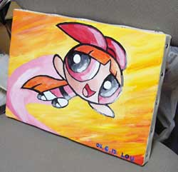
こんなものをプレゼントしていただきましたのら～。キャンバスですか、コストかかってるう。もったいなやもったいなや、でも僕モライもん。最近もらい物が多くてウハウハですよ。わはははは。
話は横にそれましたが、ぴろーん、ぴろーんとお宝ゲットしていったら、なんとFScさんがブースにいたですよ。今日はあちこち回るから会えないと聞いていただけにラッキー。たまたま、近くのブースだったあやさんにご紹介。
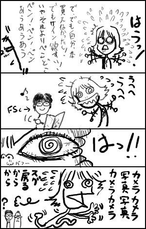
でも、オレよりFScから小物いっぱいもらってた。ちっ。
結局「muZz」は1日目で完売だったようで、2日目はすでに在庫なかったようです。でも、再刷されてTHE COMICXで買えるようになるみたいですね。
そういえば、「ryusuke works」さんのとこで買ったアメコミ本にもNight～のグウェンちゃん絵が載ってました。けっこうFScをチェックしてる人多いのかしらん。あとは同じSLGのレノーアの日本上陸とかもあったりしないかなあ。もちろんJTHMもね。JTHMがもたらした影響ってのは想像してるより大きいのですよ。
あ、もちろんあやさんのカートゥーン本も買わせていただきましたよ。しかし、インベーダージムのSIZZ-LORR漫画などだれがついてゆけるというのだ。いいけど。
あやさんといえば、今回私も参加した小町屋さんの本にも描かれていたのですね。今日、本を見るまで知りませんでした。ていうか御ゐ輔丼さんも参加していたとは・・・・げええ！個人的にはこの漫画一番キました。バターカップのゴッドミルク漫画最強。ぱんだきの子さんとの合同本楽しみにしてます。（ちなみに、今日は御ゐ輔丼さんはコスプレしておりました）
その後LOUさんのお目当てだった島本和彦の本におつきあい。げええ！（こればっか）
こ、こんなとこにもパワパフがああああああ。すげえ意外なとこに意外な発見！
ははは、はやく、そのページをスキャンしてください。はっ！そうか、先にそっちでネタにするつもりなんだな、この野郎。この卑怯モノめ！どげしゃーー！
と、LOUさんと喧嘩別れしたあと（ウソ）小町屋さんの打ち上げに参加いたしました。
場所は上野。駅をでてスグのところにあるトイショップ「ヤマシロヤ」で予約までの時間を潰していたんですが、ここすげえ！
レンスピ、ルーニー、クルテク、スポンジボブ、エトセトラ・・・なんか輸入トイいっぱいありますよ！巨大パワパフ人形まで！
で、つい買っちゃったのがコレ
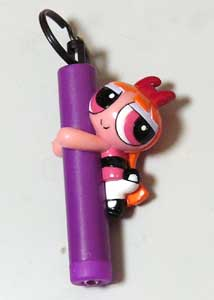
棒に抱きつくブロッサム。
棒っていうかペンライトなんですが、この、ブロッサムの流し目に誘惑されてしまったとですタイ。はふー。
そーいや、あやさんも体のパーツが交換できるルーニーフィギュアとか買ってましたな。（交換するとかなりバカっぽい）マービンのデキがいいので、私もちょっと欲しかった。
楽しゅうございました。おつきあいいただいた方、またどうぞよろしくお願いいたします。
夏コミ行って来ましたよ。
行くときは黒イルカさん、LOUさん、わいりーさん、こけし社長らと一緒にいきました。
でまあ、ビッグサイトについたんですが、着くなり
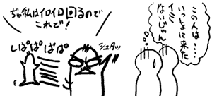
ていうか、よく考えたら、それすら言わずにさっさと会場に消えていったような気も・・・
すみません、信頼より物欲が上でした。 そして、会場では二度と彼らに会うことはありませんでした・・・・
そんな人間でいいのか＜オレ
さっそくFScさんのブース（正しくはウエダハジメさんのブース）に行こうと思ったんですが、とおるさんと連絡とってみると・・
「おせーよボケ。muZzは会場1時間ほどで完売したよ！」
って、聞いてないよ～。そんなに知名度ありましたっけ？？1000部ほどあったのが瞬殺。まさかこれが壁効果？！コミケの法則はまだまだ私には理解がおよびませぬ～。おかげで、明日の分はわずかだそうです。
ま、でも一応こんなバカを見越して私の分もキープしてくれてくれたようで、とおるさんには感謝です。ていうか、muZzの日本語翻訳したのって、とおるさんでした。「制作をお手伝い」とか奥ゆかしいこと言っていたのに、モロど真ん中ではないですか。このテレ屋さんめ。
そんなんで、自分メモをたよりに回りました。
「BAUHAUS」とこのビヨンド新作本を逃したくらいで、あとは無事回収成功。おほほほほ、幸せ。
特に前々からラブコールを送っていたものの、なかなか入手できなかったいかれしちやさんの「GIRLS in GOTHAM City」が入手できたのは感動でした。バットパフガールズかわえええ。でも、キムポ本出せませんでしたって、どーいうことよ。うおおおおお（笑）
会場ではヒタキさんにもお会いしました。
なんと海外旅行土産をいただきましたデスよ！日本じゃみかけない図柄のガールズのシールにクリアファイルですよ！
こんなんとか。
こんなんとか～！！
あ、良く見りゃ服のカラーが反転してますね！やっぱりこれは「公式のおしゃれ服」だったんだーー！
あと、
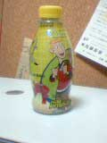
日本ではまずおめにかかれないキム・ポッシブルドリンクも！
・・・・中身は怖くて速攻捨てました（笑）
「ねこみそ」さんのDCよろず本についてきたおまけのペーパーのTT漫画（新シーズンのJINXの学園にサイボーグ潜入ネタ）が最高にウケて二人して喜んでおりました。
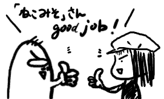
さらに、ヒタキさんには、即興で描いたTT絵もいただきました。ヒタキさん持参のスケッチブックに。
ぴろりろり～ん。スカポン太のコミケレベルが上がった。
「これがっ！スケブ持参というやつかぁぁぁぁ！！」
なんか、ヒタキさん、新井さんのとこでもジンクス描いてたようで（笑）
あとで新井・ユートニウム・新一さんのとこ寄ったら見せてもらいました。ていうか、新井さん曰く、
「これを自慢できるというか、そもそも知ってる人いなくて、スカポン太さんを待ってました～」
新井さん、TTが放映されたら絶対TT本出すって息まいてましたな。ボディーブローのようにじわじわと効く洗脳浸透中。ふふふ。
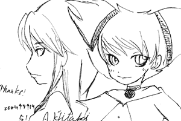ヒタキさんにいただいたTT絵
うおおお、そうだ！「むしパンダ」さんのところに寄ったときに、若鶏さんとむつりんごさんの他に女性の方がいたんですよ。（むしパンダ様、新刊なしってどーいうことですかぁ！）どっかでみたことあるような・・・とは思っていたんですが・・・後でまた寄ってみると、
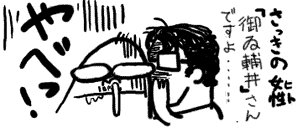
ごめんなさーーーーい。前とはかなり印象違っていたので、御ゐ輔丼さんって気が付きませんでした～～。
ここ最近TitansGo.netのお絵かき板でバリバリ書きまくってるrinacatさん。連載お絵かきをずっと注目してましたが、ついに百合展開に！
調べてみたらら、やっぱりdeviantartもあった。どうやらマレーシアの人のようだ。
そーいえば、この間アクセス解析見たら、アフリカからとかアクセスあって、世界は日本と米国だけじゃないってことを実感するよ。
ルーカス監督、シンガポールでアニメ…政府と共同
こーいう話もあることだし、東南アジアあたりもこれから要チェックなのかも。（海外ではこれにゲンディが関わっているんじゃないかとか噂が流れてますね～）
明日はいよいよコミケ。パワパフ本やらカートゥーン本やらを漁ってきます。前は2時過ぎとか3時とかダメダメな時間でしたが、今度は昼くらいには行くので大丈夫かと・・・
それにしても、参加サークルを見てると改めて鋼の錬金術師ってスゲエ人気なんだなあと思いましたよ。カートゥーンとか、この程度の人気で逆に良かったのかも・・・
おしゃれバタ子擬人化 ここの管理人様サービス精神が旺盛なのでしょうか？（誰に？オレに（笑））うれし。ここまできたらおされバブ子も期待してしまいます。（ブログじゃないので、トラックバックがつかないのがちょっと悪いような気がしてきた）
さすがにお盆のコアタイムが近づいてきてるようで、今日はちょっと余裕がありましたよ。いつもこのくらいゆったりしてると、気持ちがささくれなくてええなあ。おかげでまるで普通の会社のように定時には終わらせて、渋谷をてくてくと。うお！夜までが長い！すばらしい！
ここぞとばかりに、服とか靴とか買ったりと。 すげー！店がみんな開いてる！しかも夏バーゲンだらけ。わーい。
のほほーんと、渋谷から原宿まで歩く。やっぱ自分は渋谷より原宿のほうが好きだなあ。別におっしゃれーってわけじゃないんだけど、歩いてて気持ちいいから。渋谷はなんかゲスな感じがしてどうもね。あ、原宿っていっても竹下通りはチト別の意味でキツイです。キャットストリートあたりが好き。あと表参道もいいね。別に立ち寄る店はないんだけど、道が広くて歩きやすいし、心地よい。
ところで、普通のショッピングに混じって・・
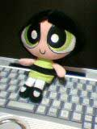
やっぱりこんなものを購入。
こちらもバーゲン品でした。300円。
あまりグッズ類は買わない私でしたが、ふと見るとバターカップだけが売れ残っていて、ぽつんと。
「そ、そんな目でオレを見るな～～～！」
と、いうわけで買ってしまいましたとさ。 いつもはブロッサムばかりを買う私ですが、うーん、やっぱバターカップも良いですね。これでぬいぐるみはブロとバタの2体。なんかバブルスも買わなきゃいけない気がしてきた・・・・
今は自分で描くより、人様のお絵かきをみているのがスッゴく楽しい。微妙に休みモードになってるのかも。ちょうど、ゆっくり回れるヒマもできたしね。（とりあえず今日のところはだが・・）
Deviant Art:bleedman とうとうジェニー漫画がスピンオフ。そのうえ、「PpG chapter3p9,p10」ではGAZやDIBまで出てくる始末。ただ、デクスターが眼鏡をとったら美少年って展開はイヤダー（笑）
リンクはちょっと構成を変えようかとか色々試行錯誤中で難航中。そのうえ、ついつい、リンク先のサイト様とかノンビリ回ったり、そっからまた先に遊びにいったりとして、全然進みません。ほら、あれだ、部屋の整理とかしようとして、ついつい古い雑誌とかを読みふけっちゃう・・・ってアレですよ。こりゃ当分先になるかな？とか言ってる先からHappyTreeFriendsサイトとか巡ってたりして・・・わーん、ネットっておもろすぎるよー。
そんでもってそんなこんなで、またまたお気に入りを発見。「ワルぷるぎす」うほっ。好みかも！
英語音声でもっと聞こうと思う今日この頃。
JINX役のLauren Tomさん、この人けっこう活躍していて、ビヨンドのテリーの恋人デーナ役だったり、フィルモアのテハマとかやってる。そして、今度始まるKNDのサンバンちゃんも、Lauren
Tomですよ！TeenTitans放送前にJINX成分を補充しよう。
ついでに、スターファイヤーも調べてみる。
スターファイヤー役のHynden Walchさんはチョークゾーンのペニーの中の人でもあるみたいですね。わーお。
調べていてついでに見つけたもの。
スターファイヤーのリアルネームって「Koriand'r」って言うみたい。「コリアンダー」って読むのかな？ちなみにブラックファイヤーは「Komand'r」。コマンドー？
ところで、8月6日にブログな話題でリンクはっちゃった「開店休業研究所」様。なんかこっそり覗いてたのがばれちゃったようで・・でも、おかげさまで「Dream In Style」のおしゃれブロッサムの擬人化絵が見れたのは嬉しい誤算。
いいかげんリンクのメンテナンスしなきゃいけないと思い、ちまちまと作業中。意外にめんどうくさいね。
その過程でちょっとお気に入りをみつけた。「Candy
Rain」お絵かきが楽しいとこですね。
絵日記の [274]がオモロかった。
マッハの余韻がまだのこってる。ヒジは刀。ヒザは槍。
なんとなくぼんやりと気になっていたんだが、少しハッキリした。妙に日本っぽい感じを連想するのは、ややウェットな物語ってだけじゃない。違う、あれは、少年漫画だったんだよーーー。
主人公は田舎の村の実直な青年。村に代々伝承されてきたムエタイの後継者だ。そう、彼が使うのは競技としてのムエタイじゃなかったんだよ、あれこそは、ムエタイ古武術。
修羅の門！！！
そうなんだよなあ、ムエタイであって、ムエタイじゃない。競技化されて失われた数々の技をもつ古ムエタイをひっさげて、上京。強豪たちをばったばったと叩きのめす。うんうん、少年漫画。街で出会ったのがセクシーねーちゃんではなく、「少女」ってのも日本の少年漫画っぽい。そのへんに日本ぽさを感じていたのかもね。新作も制作中ってことで、「マッハ2」あたりも期待だなあ。
ところでX-menエボは新シリーズですね。イマイチ頼りなかったサイクががんばってる。ま、それなりにだけど。この先、あの変態魔神シニスターは出てくるのかなあ？
ところで、やっぱりエボのガンビットは、どーもまだ慣れない。やっぱガンビットって言ったら・・
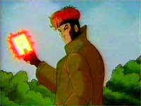
これでしょ。粋でイナセな伊達男。ロングコートを渋くきめてさ。
あと、エボのローグも悪くないけど・・・やっぱ
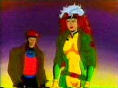
こっちの姉御なローグが好きだなあ。ガンビットもローグも特に好きだったから、やっぱり違和感が残るんだよねえ。
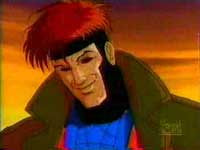
「あんたも、そう思うだろ、お嬢ちゃん」
なるほど。サイクロップスとかジーンとかどーでもよかったから、けっこう許容できるんだな。うん。
打ち合わせの予定が狂って、突然3時間くらい時間をもてあますはめに。
てなわけで、ここぞとばかりに、FScの原画展見にゆきました。まん森本店なんて何年ぶり？
原画は購入しなかったけど、楽しめました。「muZz」の原画もあったし。
ほほう、やっぱり漫画用原稿用紙みたいのがあるんですな。 それにしても、売約済みの原画をみると・・・どれもこれもアナベルが出てる原画ばかり。うーむ、やっぱ人気あるなアナベル。
それでも時間が余ってるので映画も観た。
おもろかったー。
かつてのカンフー映画が蘇ったがのようなあの感覚。実際オマージュみたいな作りになってたし。だからもちろん、エンドロールには「メイキング＆NG」シーンが流れるのですよ。うほっ。
路地裏での超絶アクションによるおいかけっことか、3輪バイクのカーチェイスとか。ただ、ここが見せ場だよ、すげーぞ！見ろよ！ってな感じで、すごいシーンは別アングルでリピートするのは、親切というかちょっとしつこいっていうか・・・ちょいくどかった。まあ、なんか熱気はつたわったけど。ただこのへんのアクションはやっぱりジャッキーのほうがまだ上かな。確かにアクションそのものはマッハは凄いけど、アイディアと演出はジャッキー天才的だったものなあ。
しかしね、それよりなにより、ムエタイ・アクションですよ。ホントに早回しなしなのかね。めっちゃ速いうえに、本気で当ててるんですけど・・
なんでも、この監督、この映画のために古い文献を漁ったり、寺院を回ったりして今は使われてない古い技とかを集めてきたらしい。だから、このマッハではルール化しリングで行うようになる以前のムエタイの技とか出てくる。中国拳法との中間みたいな技もあったなー。
裏武闘会みたいなとこでは、次々といろんなファイターが出てきて、エアマスターみたいだった。マットじゃなくて、床だし。痛そう。日本人ファイターも出てきたですよ！！
「トチロー」
字幕ではトシローってあったけど間違いなく「トチロー」って呼んでた。
でも戦うダンスマンみたいなやつだった。だってアフロのうえに、へんなステップふんでるんだもの。めちゃ速かったけどね。
そうそう、ムエタイですよ。やっぱスゲエのは。ムエタイ・アクションなので、見栄えのいい大技とかもあったけど、むしろゾクリとくるのは小技のほう。ヒジとかヒザとか。他の格闘技系だと、ある程度の距離ってものがあるんだけど、この場合、懐にはいってからのショートレンジでの反応速度がすげえの。そもそもキメ技系がヒジとかヒザとかだから、密着した形で技が決まるって見え方自体が新鮮。真空跳びヒザ蹴り炸裂しっぱなし。
あーやっぱムエタイはヒジとヒザだよなあ。K-1とかじゃ禁止されちゃってるけど、それじゃ技のほとんどが出せない状態。ボクサーにパンチ禁止って言ってるようなもの。（そーいや佐竹もヒジとかヒザが得意でそれがキメ技だったっけ・・・使えなくなってから精細欠いちゃったのもうなずけるなあ）
全体の印象として、タイ版カンフー映画って感じもあるけど、それよりはもちっとウエットな印象も。香港映画と日本映画の中間みたいな感じかしらん。
なにより、なんか中国系の人よりタイの人のほうが日本人ぽく見える。ワキ役の人、オダギリジョーに末広に桜金造に見えてしょうがなかった（笑）
仕事ですた・・・
もうお盆休みじゃないのかよーーー。と、怒鳴ったところで、相手は外資系。ちきしょう、こいつらクリスマス前後はたっぷり休みやがるんだよなあ。あー、今日は昨日だらけた分いろいろと行きたいとことかあったのにな～。映画とかも見にゆきたいなあ。「スパイダーマン2」とか「ヘルシング」とか言う流れっぽいけど、一番見たいのは「マッハ」だったり。K-1 では見れないヒジとかヒザの凶悪スマッシュがてんこもり炸裂だー。見てー。
もともと日本上陸前からタイ好きのやつからさんざん話聞かされてたから、見たくてしょうがなかったんだよなあ。ちなみにタイ好きのそいつは、とうとうタイの嫁さんもらってしまったとさ。人生ってつらぬいたやつの勝ちだよなあ。
ところで、おしゃれガールズのミニエピソードはどーなったんでしょうか？「coming
August 6」って・・とっくに過ぎとるわーい！どーなってるんだ？
しかたがないので、最近復活したThweattさんとこでも覗いて補完します。
PpGケータイサイト覗いたら、横浜でのリポートが載っていた。いいな、やっぱり握手できたんだ。でも、先着5名ではちょっとキツかったかな。とりあえず、やっぱり着ぐるみは「イベント着ぐるみ」でした。アメリカ製の「イベント着ぐるみ」は今どこに。オーストラリアかな？
weblogとかやってみたいなあとか思う。あたらしもの好き。日記とBBSに距離感があるのも、前から気になってたし。でも、ブログ始めるとブログサイトになっちゃいそうで、それがイヤ。あくまでサブとして日記はつけていたい気分なのよ、なぜか。コンテンツ重視というか、頭が古いのかしらん。
ブログといえば、ティーンエイジロボット公式ブログがなんか凄いことになってる。いつのまにやらファンアートだらけ。
再々々入荷のパワパフ＃50がついに「品切れ」。はたして、再々々々入荷はあるのか？！いやさすがに、もうないだろ・・・もしやったら感心するけど。
ぎゃっ！「変ドラ」いつのまにか復活してたのね！しかも独自ドメイン。
久々の休みだったので、むさぼるようにゴロゴロとしてました。
TV見て～。寝て～。なんかつまんで。寝て。メール見たりして。寝て。TV見て～（以下くりかえし）
急激なだらだら生活に、逆になんか体調が悪くなって・・・あれ？ だらだらと同時にぐったり。やっぱ慣れないことはするもんじゃないってこと？そんな・・・
久々にカートゥーンネットワークもたっぷり見たなあ。
ジャスティスリーグはクリスマス話。この話、いつ見てもランタンとホークガールの雪合戦にドキドキします。こいつら途中からムキになって殺し合いはじめたりするんじゃねーかと。ドキドキ。
パワパフは残念ながら今日のはどっちかっていうとつまらない部類にはいる話（なまけ警官の話）だったけど、見てるとあっと言う間。やっぱパワパフはえーーのう。
まあ、とにかく今日は生産的なことはなにもせず。どよーーーん。
クローン大戦一挙放送ってわりには、頻繁にCMが入ってたですな。ま、いいけど。
そーいや、K.N.Dがいよいよ9月に上陸。ほんと、なんだかんだいって新作キッチリあげてくるねえ、日本CN。たしかアレもカートゥーンカートゥーンズだったと思うけど・・てことはビリマンはまだおあずけってことでしょうか？やはりハロウィンに復活なのかなあ。
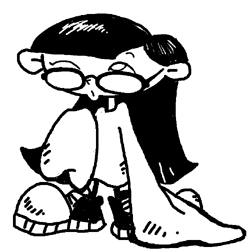
絵を描く気力はないので、昔書いた眼鏡娘サンバンちゃんでもあげてみる。
だらだらと他のチャンネルでやってたフリクリでも見る。これはけっこう好き。カートゥーンとも無関係でもないし。本国のCNのアダルトスイムでもやってることだし。TeenTitansにも影響を与えた作品って話だしね。それにしても、日本から見るとアダルトスイムのサイトって、フリクリ犬夜叉に混じってハーベイバードマンがいるのが異様ですな（笑）
ああ、アダルトスイム系の作品も上陸しないものか。ブラックショーとはシュールすぎて笑いどころが難しいけど、AQUA TEEN HUNGER FORCEやHARVEY BIRDMANはイケルと思うのだが・・・
ふふふ、このサイトの裏テーマはレノーアの普及活動。地味に信者獲得にはげむのさ。
そーいえば、作者のローマン・ダージさんは、FScさんの話では、コミコンに出席はしてたものの、もの凄いファンの数に逃げ回っていたそうです。インディーズだし、アメリカでも知名度はどれほどのものなんだろう？と思っていたけど、けっこう人気みたいですね。
まあ、コミコンというコアなファンたちの集いですから、一般的な認知度のものさしにはなりにくいだろうけど。
最近楽しく読んでいるゼロセットさんのブログ。ヒネリもなにもない地味なタイトルだけど、けっこう面白い。なにより、カートゥーンの感想とかもあるのが良い。意外にないんだよね、カートゥーンの感想系サイトって。名作劇場も好きなので、いつも楽しみにしている。
他にカートゥーン系のブログといえば、
カートゥーンアルケミー とかカートゥーン好きのタワゴトとかか？
あとは、まぬ犬さんとこのまぬけ犬推進委員会議録もカートゥーンブログと言えるか（アダルトスイム系というめっちゃ珍しいとこ）
専門でなくとも、ときおりいろんなブログでカートゥーン話を見かけることもある。
開店休業研究所・ブログ研 とか。mkoblogとか。
いろいろ見てるとやはり日本のブログ文化ってのはWeb日記の延長にあるものなんだなあ。とか思う。
いやね、今日たまたま古い雑誌とか整理してたら、「インターネットで日記とか公開してるやつがいるけど、しょーもない。今日ナニ喰ったとか、飼い猫がどーしたとか。そんなんおもしろいわけないだろうに。もっとコンテンツの充実を・・・」（1998年）
とかいうコラムがあったのよ。当時からして、「なに言ってやがるコイツ、それこそがインターネットのおもしろさだろが！」とか思ってましたが、さてはてこの方は今のweb日記やブログの盛況をどのように思っているのでしょうかねえ。まあ、プロ作家さんだったこともあるんだろうけど、「おもしろいもの」ってのが「あたえてくれるもの」と思っているか「自分でみつけだすもの」と思っているかの認識の違いだとは思いますが。
「おもしろいもの」を見るのはすばらしいが、「おもしろいところを」見つけだす努力をすると、より人生は楽しくなると思う。いつも「つまんねー、退屈。なんかおもしろいことねえ？」とか言ってるやつは楽しむ努力が足りないかと。自業自得。
なんかちょっと、ブログ話からズレちゃったけど、うちのサブ掲示板で利用しているteacapのシステムに「RSS」機能がつくようになったりして、これからますますブロク関連は発展してゆくのかなあ、なんて。
ところで、おしゃれガールズのミニエピソードはどーなったんだ？6日終わっちゃいましたけど・・・
まさかWebではなくてTV放送？
PpG COMIX VOTEの「スカート、ゴーゴーユウバリトイッショネー」にちょっぴりウケてる今日この頃。
今日はトンデモなくて、そして楽しい日でした。なんか、今でも信じられません。
まさか自分の人生にそんなことがおこりえるなんて考えもしなかったですよ。原稿無事アップできたご褒美でしょうか。
符 瑞君に会ってきました。え、符 瑞君って誰だって？
符(Foo) 瑞(Swee)君(Chin)、FScさんに会ったですよー！
しかも一緒にディナーだぁ！
Comic Archivesのとおるさんの紹介で、急遽日本に来ているFScさんに会えました。ウソみたいな出来事に、しばし現実感なし。
FScさんは小柄でかわいらしい方でした。あまりに若く見えるものだから、お歳を聞いたあと（よく考えたらすごく失礼なやつだ）、「へえ、学生みたいに見えます。うーん、プリティ」と言ったら、とおるさんににらまれた。
「ボクでさえ、プリティだなんて言ったことないのにっ！！！きいいいいい」
あ、いや、こんなサイトやってると「プリティ」とか「キュート」とかの言葉に慣れきっていただけでその・・・
それよりなにより、初めての対面に時、めちゃめちゃ感動しましたですよ！私がパワパフファンであるってことを聞いていたようで、なんと「パワパフのメモ帳」をプレゼントしてくださったのです。ぎゃー。そ、そんな、こんな糞虫みたいなダメ人間にそんな、そんな、もったいない。もちろんいただきましたとも。だれが断るというのですか。ド感動。
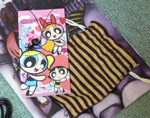
しかも、フーさんオリジナルのグッズ付きだぁぁぁ！
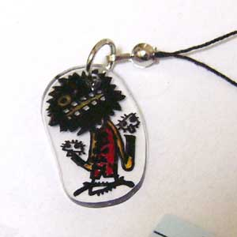
ずぎゅーーーーーーーーーん。ありえなーい。XD
つたない英語で会話するも、なさけないくらいダメダメ。ほとんどソロモン・グランディ状態。
「オレ、コレ、キャラ、好き」...＿|￣|○
だいたい、質問の時だって疑問形になってない。なもんで、けっこう私は日本語のままで喋ってました。ダメじゃん。でも、それなりに意志は通じてた感じ。なぜなら、つたないとこは、ノートに筆談。あーーーーんど、お絵かきでフォロー。調子にのってアナベルとか描いちゃったよ、はずかちー。
あとは、持参したコミックとかでなんとか話をつないでいきました。もちろんもらったさ！本にサインを！
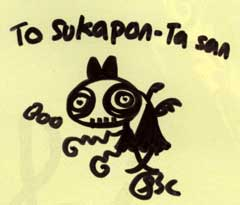
なんかパワパフとかも意識してくれたみたい。でも半分ワシが混じってる（笑）うひうひうひ。たまんねー。
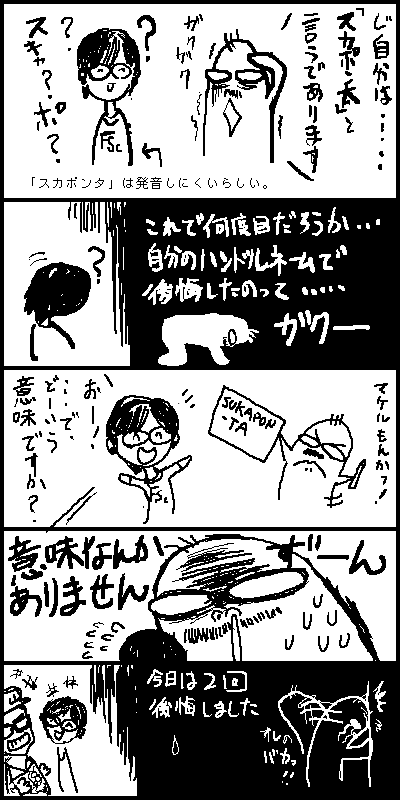
他に今のタッチになる前の昔の漫画（当時は「蛍火虫」というPNだった）を見せてもらったり、シンガポールの漫画事情やら、Jhonen や Rikkiと仲が良いらしく、そのへんの話とか、どういう風にアメリカとやりとりしてるのかとか、色々お話しました。思い返してみると、なんかいっぱい喋ってたなあ。
えへへへ、リクエスト絵も描いてもらっちゃったい。スノーホワイトとアナベル。
やっと終わったよー。結局昨日は、睡魔に負けて全然手つかずでした。
今日は激しく仕事しなきゃいけないと覚悟してたんだけど、納期が延びてちゃんと帰れました。助かった～。
後は納品するだけ。オンラインでぽちっとな。ああ、インターネットってすばらしい。
TeenTitansテーマのPV、webにアップされてるってヒタキさんとこに書いてあったので見てみた。
おお！これぞパフィーのPVじゃなくてTeenTitansのPV！！！アニメ映像だらけ！
変顔やチビTTなんかもバッチリあって、見てて楽しいな。
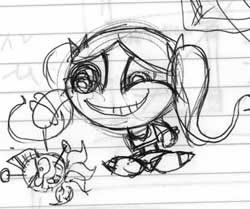
原稿4p目これから～（今夜中の2時）。マジやべえ。明日は徹夜仕事が入りそうなので、なんとか今日中に（次の日の朝までが今日です！）仕上げたい。
ちなみに漫画は3pで終わりです。製本の関係上、ページは4の倍数ってことになってるので、これはおまけのページ。実は8pという野望を持ってたんですが、無理っぽそう。間に合わなかったネタは、そのうち仕上げてwebにでものっけようかな。
5日に突然の急用が入り、ビビリまくってます。いいの？いいの？ワシなんかが会っていいの？
心の整理がつかず、うろたえるばかりです。なんかマジでパワパフはまってから人生変わったなあ。
ただ今心拍数上昇中。
ところで、TeenTitansGo!#9買いました。
けっこう楽しめた。おもしろいよ、今回。ギズモ一人にてんてこまいの弱っちいヒーローチームいいなあ（笑）
今回はスーパーロボットものです。ロビンバイクが頭部。タイタンズの水中マシンがボディ。サイボーグの車が下半身。5人の力を一つに合わせて合体だ！
「TeenTitans..TOGETHER!!」
その名も「TEENTITANS GO-BOT5」
話もオモロイんですが、今回はなんと・・・・・・・
JINX再登場！！！
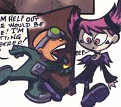
「うわあああ」とマジ声をだしてしまいました。ちょっとしたゲスト出演だったけど、良かった～。えへらえへら。
原稿3p目できたー。
こんなテケトー絵なのに時間がかかるのは何故でしょうか？単に集中力が続かないだけすね。ラフはすぐ終わったのになぁ～～。1日1pペース。小町屋さんは印刷所泣かせの極道入稿なので、もうちょっと期日はあるけど、さすがにヤバイかも。
あ、FScさんの15日目の委託先が決まった様子。本人14日は売場に待機みたいですが、15日はあちこち回る予定みたい。って、15日は成人向けばかりな気もしますが・・いいのか？
委託先のサークル、並べてみると、なるほど。どれも「まんがの森」と関わりのあるサークルのようですな。
旅行先は修善寺でした。
修善寺といえば、わさびの名産みたいですね。なんかいっぱいわさびのおみやげやらなんやらがありました。
で、
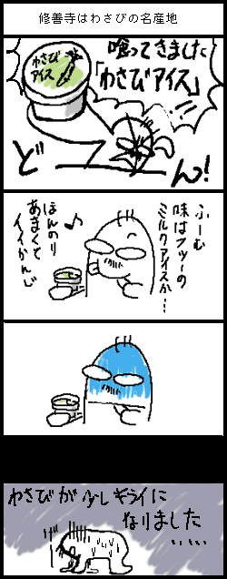
なんつーかさ、最初は普通のミルクアイスなわけよ。
でも、後で舌の奥でツンとくるわけですよ。甘いんだけど、辛い。なんと言ったらいいやら・・・・醤油とかとなら、ピリッと抜けて爽快感もあるんだけど、これはわさび特有のピリ辛が、ねちゃねちゃといつまでもいつまでもいつまでも残ってるわけですよ。ピリピリと。でも口の中は甘い。この組み合わせはありえない・・・しかも、生わさびをこってりと混入してるみたいで、（なんかわさびのカケラみたいのもいっぱい入ってた）けっこうズガンときます。
ズガーーーーん
黒米も名産みたいで、「黒米アイス」ってのもありました。そっちは、普通の小豆アイスみたいで、うまかったです。
あとで張り紙みたら、黒米アイスは「まろやかな味がおいしい！」みたいなこと書いてあるのに、わさびアイスには「忘れられない味！」とか書いてあって「うまい」とか「おいしい」とかは、どこ探しても書いてないのですよ。ズガーーン
おまえら、分かっててこんなの出してるな～～～！！！！
喰ってからずーーーーーーーーーーっと味が残ってて、しばらく鬱ですた・・・トラウマー。
でも、一人で全部食べましたよ、ええ。泣きながら。一緒にいたヤツラに、「一口たべない？えへ」って誘っても、みなワシの顔色みて逃げていったですよ。ううう、ちきしょう。
と、いうわけで。
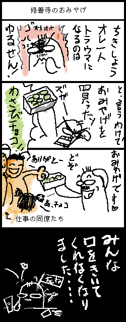
旅行から帰ってきました。
とりあえずのメールチェックとかなんとかして、これからフロ入ってきます。
気力があったら続き書くかもしれないけど、今日は多分寝ちゃうでしょう。
とても楽しかった。
原稿・・
{kind=link}